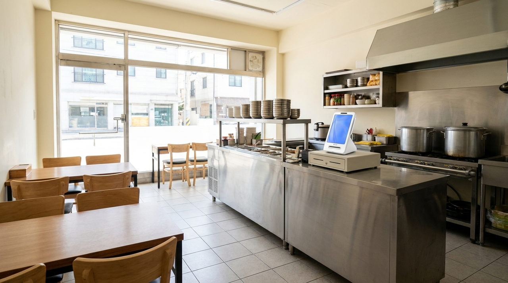
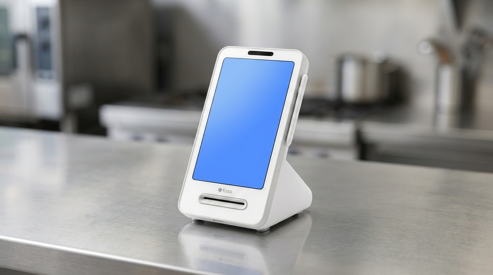

간편결제 종류가 늘어날수록 계산대가 복잡해지는 이유
분식집처럼 결제 한 건이 빠르게 지나가야 하는 매장에서, 손님이 "○○페이 되나요"라고 물을 때마다 사장님이 잠깐 멈추게 된다면 그건 매장 잘못이 아닙니다. 결제 수단이 몇 년 사이 크게 늘었고, 각각 확인하는 방법이 조금씩 달라서 생기는 일입니다. 저희가 14년간 매장을 다니며 본 바로는, 이 문제를 해결하는 방법은 수단을 줄이는 것이 아니라 한 대에서 다 받도록 묶는 것이었습니다. 이 글에서는 계산대가 복잡해지는 실제 이유와, 묶을 때 확인할 기준을 정리했습니다.

손님은 늘 새로운 결제 수단을 들고 옵니다
카드만 받던 시절에는 계산이 단순했습니다. 지금은 카드, 각종 간편결제, 페이 계열, 지역화폐까지 손님이 꺼내는 것이 제각각입니다. 손님 입장에서는 평소 쓰던 것을 꺼낸 것뿐인데, 매장 입장에서는 그때마다 확인 방법이 달라집니다.
여기서 계산대가 복잡해집니다. 어떤 것은 단말기에서 바로 처리되고, 어떤 것은 다른 화면을 열어야 하고, 어떤 것은 별도 기기를 씁니다. 계산대에 놓인 물건이 늘어날수록 손님 한 명당 걸리는 시간이 길어지고, 점심시간처럼 몰리는 시간에 그 차이가 줄로 나타납니다.
문제는 시간만이 아닙니다. 수단이 흩어져 있으면 매출도 흩어집니다. 하루가 끝난 뒤 이곳저곳을 열어 더해야 하고, 숫자가 안 맞으면 다시 봅니다. 낮에 몇 초씩 잃은 시간이 밤에 몇십 분으로 돌아옵니다.
줄이는 게 아니라 묶는 쪽이 맞습니다
간혹 "복잡하니 몇 가지는 안 받겠다"고 하시는 분이 계십니다. 이해가 가지만 권해 드리지 않습니다. 손님이 쓰려던 수단을 못 쓰면 그 결제는 그냥 사라지거나, 다음에 다른 가게로 갑니다. 특히 소액 결제가 잦은 업종일수록 이 손실이 조용히 쌓입니다.

방향은 반대여야 합니다. 받는 수단은 그대로 두고, 받는 자리를 하나로 만드는 것입니다. 한 대에서 카드도 간편결제도 처리되면 손님이 무엇을 꺼내든 사장님의 동작은 같아집니다. 동작이 같아지면 속도가 붙고, 직원이 바뀌어도 가르칠 것이 줄어듭니다.
매출 정리도 같이 해결됩니다. 한곳에서 받으면 내역도 한곳에 모이고, 수단별로 구분해 볼 수 있어 마감이 짧아집니다. 계산대를 정리하는 일이 결국 장부를 정리하는 일이 됩니다.
묶기 전에 확인할 기준
| 확인 기준 | 왜 필요한가 |
|---|---|
| 손님이 실제로 자주 꺼내는 수단 | 매장마다 다름. 상권과 연령대에 따라 차이가 큼 |
| 점심·저녁 피크 시간의 대기 길이 | 속도가 매출에 직접 영향을 주는지 판단 |
| 계산대에 지금 놓인 기기 수 | 줄일 수 있는 것이 무엇인지 파악 |
| 소액 결제 비중 | 비중이 높을수록 한 대로 묶는 효과가 큼 |
| 직원 교대 여부 | 여러 사람이 쓰면 동작이 같아야 실수가 줄어듦 |
| 마감에 쓰는 시간 | 지금 몇 분 걸리는지가 개선의 기준선 |
이 여섯 가지는 상담 때 저희가 실제로 여쭙는 항목입니다. 특히 마지막 항목은 꼭 재 보시기를 권합니다. 지금 몇 분 걸리는지 모르면 나아졌는지도 알 수 없습니다.
계산대에서 손님이 기다리는 시간은 생각보다 길게 느껴집니다
같은 30초라도 서서 기다리는 손님에게는 훨씬 길게 느껴집니다. 특히 점심시간에 뒤에 줄이 있으면 앞사람도 뒷사람도 마음이 급해집니다. 결제가 한 번에 끝나면 이 긴장이 사라지고, 사장님도 손님 얼굴을 한 번 더 보게 됩니다.
작은 매장일수록 이 차이가 크게 돌아옵니다. 자리가 몇 개 없는 분식집에서 회전이 조금만 빨라져도 하루 손님 수가 달라지기 때문입니다. 결제 속도는 서비스의 문제가 아니라 좌석 수의 문제이기도 합니다.
계산대를 정리하면 직원 교육이 짧아집니다
작은 매장일수록 사람이 자주 바뀝니다. 아르바이트가 들어올 때마다 결제 방법을 처음부터 가르쳐야 한다면, 그 시간도 비용이고 그 사이 실수도 비용입니다.
계산대에 기기가 여러 개 있으면 가르칠 것이 그만큼 늘어납니다. "카드는 이걸로, 이 페이는 저 화면에서, 저건 사장님 부르세요." 이런 설명이 붙으면 새로 온 사람은 손님 앞에서 멈칫하게 됩니다. 손님은 그 멈칫을 서비스로 받아들입니다.
한 대로 묶이면 설명이 한 줄로 줄어듭니다. "손님이 뭘 내밀든 여기에 대시면 됩니다." 이 한 문장으로 끝나면 첫날부터 혼자 계산대를 볼 수 있습니다. 교육 시간이 줄어드는 것이 아니라, 교육이 필요 없어지는 쪽에 가깝습니다.
여기에 하나 더. 사람이 바뀌어도 매출 기록이 흔들리지 않습니다. 누가 계산했든 같은 자리에 같은 형태로 쌓이기 때문에, 사장님이 나중에 확인할 때 사람에 따라 달라지는 부분이 없습니다. 분식집처럼 회전이 빠르고 손이 여럿 필요한 업종에서는 이 일관성이 생각보다 큰 차이를 만듭니다.
저희는 설치할 때 매장에 계신 분들과 함께 한 번 눌러 보고 나옵니다. 사장님만 아시는 것보다, 계산대를 실제로 보시는 분이 아는 것이 중요하기 때문입니다.
자주 묻는 질문
Q. 어떤 간편결제까지 받을 수 있나요?
매장에서 실제로 필요한 수단을 기준으로 구성해 드립니다. 손님이 자주 찾는 것이 무엇인지 알려 주시면 그에 맞게 안내해 드립니다.
Q. 기존에 쓰던 기기를 다 바꿔야 하나요?
아닙니다. 지금 쓰고 계신 것 중 남길 것과 정리할 것을 나눈 다음, 필요한 부분만 바꾸는 방향으로 제안 드립니다.
Q. 수수료는 수단마다 다른가요?
결제 수단과 가맹점 조건에 따라 다릅니다. 구체적인 조건은 계약과 정책에 따라 달라질 수 있어, 매장 상황을 알려 주시면 해당하는 기준을 확인해 안내해 드립니다.
Q. 설치하면 직원이 새로 배워야 하나요?
동작이 하나로 통일되기 때문에 오히려 배울 것이 줄어듭니다. 설치 때 매장에서 함께 눌러 보시면 대부분 바로 익숙해지십니다.
손님이 무엇을 꺼내도 같은 동작이면 됩니다
결제 수단은 앞으로도 계속 늘어날 겁니다. 그때마다 계산대에 물건을 하나씩 더 놓는 대신, 받는 자리를 하나로 만들어 두면 늘어나도 흔들리지 않습니다. 손님이 자주 꺼내는 수단과 지금 계산대에 놓인 기기가 몇 개인지만 알려 주시면, 어떻게 묶는 것이 좋을지 함께 정리해 드리겠습니다. 정품 신제품 보증, 수도권 직영 설치로 방문해 드립니다.
- 📞 전화상담 1544-7754
- 🌐 홈페이지 https://nwpos.co.kr

📷 인스타그램 팔로우 https://www.instagram.com/nurinetworkspos

▶️ 유튜브 구독 https://www.youtube.com/@nurinetworks